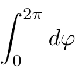
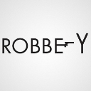
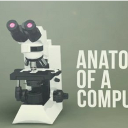
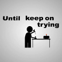
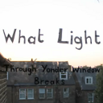

|
Nobel Prize in Physics 2009 |
Recent Posts all posts

|
Short Educational Clips |
Nature by Numbers |
|  |
Why to study math? |
|  |
Typography: Word as Image |
|  |
Stuxnet |
|  |
Portal - Still Alive typography clip |
Clip: Love Tap |
Clip: Bob the Hamster |
|  |
Clip: What Light |